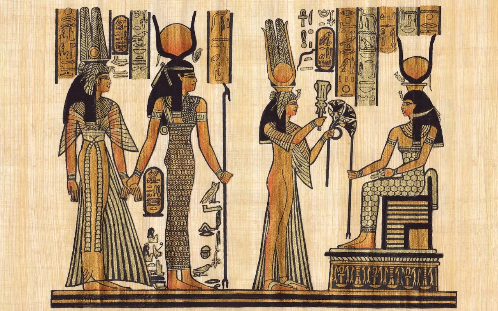

향수의 역사 :
기원
고대
약 5,000년 전의 고대 사람들이
신과 인간의 교감을 위한 매개체로 사용했다.
메소포타미아 문명, 이집트 문명 시기인
5,0000년 전은 신에게 제사를 지낼 때
몸을 청결히 하고, 향기가 나는 나뭇가지를 태우고,
향나무 잎으로 즙을 내어 몸에 발랐다.

인더스 문명시기
인더스 문명시기에는 향료와 향료 제조소가 있었다.
식물에서 추출한 에센셜 오일을 증류했다는 기록이
라유르베다 의학서인 차라카 삼히타와
수스루타 삼히타에 있다.
세계에서 가장 오래된 향수
4000년 전에 만들어진 향수는
적어도 60개의 증류기, 섞는 그릇, 향수 통이 존재했다.
즉, 고대 사람드은 꽃 뿐만 아니라 아몬드, 고수,
은매화, 베르가못 등 구과식물을 이용하며
향수를 만들었다.